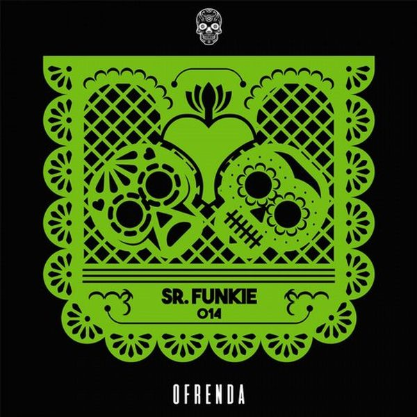

I 27 dischi
 1
You Got SoulGary Caos
1
You Got SoulGary Caos
 2
Love SensationEddie Thoneick, Kurd Maverick, Ann Bailey
2
Love SensationEddie Thoneick, Kurd Maverick, Ann Bailey
 3
DarknessFond8 & DJ APT
3
DarknessFond8 & DJ APT
 4
FreaksFisher
4
FreaksFisher
 5
My LifeSolardo, Eli Brown
5
My LifeSolardo, Eli Brown
 6
Walk AwayAsher Postman feat. Annelisa Franklin
6
Walk AwayAsher Postman feat. Annelisa Franklin
 7
Heaven Is A Place On EarthGreg Dela x Xad feat. Derrick Ryan
7
Heaven Is A Place On EarthGreg Dela x Xad feat. Derrick Ryan
 8
Still Better OffArmin van Buuren & Tom Staar feat. Mosimann
8
Still Better OffArmin van Buuren & Tom Staar feat. Mosimann
 9
Red Alert (The Cube Guys Remix)Basement Jaxx
9
Red Alert (The Cube Guys Remix)Basement Jaxx
 10
MidnightAlesso ft. Liam Payne
10
MidnightAlesso ft. Liam Payne
 11
Love SongDuke Dumont
11
Love SongDuke Dumont
 12
Potion ft. ManelaMADDOW
12
Potion ft. ManelaMADDOW
 13
Dinner TimeLady Bee
13
Dinner TimeLady Bee
 14
Slow Motion ft. YoukiiSTVCKS & Jaxomy
14
Slow Motion ft. YoukiiSTVCKS & Jaxomy
 15
Superstar DJJack Back
15
Superstar DJJack Back
 16
The JabberwockMr. Belt & Wezol
16
The JabberwockMr. Belt & Wezol
 17
ChildrenBROHUG
17
ChildrenBROHUG
 18
Little Bit LoveSteff Da Campo x Mordkey
18
Little Bit LoveSteff Da Campo x Mordkey
 19
Ice CreamDamien N-Drix
19
Ice CreamDamien N-Drix
 20
BreathMWRS
20
BreathMWRS

21 Whats Your NameSr. Funkie 22
Sing It BackMoreno Pezzolato
22
Sing It BackMoreno Pezzolato
 23
Jack My Body (feat. Mike Dunn)N-You-Up
23
Jack My Body (feat. Mike Dunn)N-You-Up
 24
Don't You Want MeEli Brown, Love Regenerator
♪
25
Freaks At Night (Luke DB Mash Up Mix)Fisher Vs Shakedown
24
Don't You Want MeEli Brown, Love Regenerator
♪
25
Freaks At Night (Luke DB Mash Up Mix)Fisher Vs Shakedown
 26
LockdownJerry Ropero, Terri B!, Slippy Beats & Paper Head
♪
27
Superstar - (Tom Novy deep tech extended)Dj Antoine & Tom Novy
26
LockdownJerry Ropero, Terri B!, Slippy Beats & Paper Head
♪
27
Superstar - (Tom Novy deep tech extended)Dj Antoine & Tom Novy
La tracklist
- 1 You Got Soul Gary Caos Casa Rossa
- 2 Love Sensation Eddie Thoneick, Kurd Maverick, Ann Bailey Dynamik Music
- 3 Darkness Fond8 & DJ APT Metropolitan Recordings
- 4 Freaks Fisher Catch & Release / Astralwerks
- 5 My Life Solardo, Eli Brown Ultra Records
- 6 Walk Away Asher Postman feat. Annelisa Franklin Armada Music
- 7 Heaven Is A Place On Earth Greg Dela x Xad feat. Derrick Ryan Found Frequencies
- 8 Still Better Off Armin van Buuren & Tom Staar feat. Mosimann Armada Music
- 9 Red Alert (The Cube Guys Remix) Basement Jaxx XL Recordings
- 10 Midnight Alesso ft. Liam Payne 10:22 pm
- 11 Love Song Duke Dumont EMI
- 12 Potion ft. Manela MADDOW BRING THE KINGDOM
- 13 Dinner Time Lady Bee Hexagon
- 14 Slow Motion ft. Youkii STVCKS & Jaxomy Hexagon
- 15 Superstar DJ Jack Back Positiva
- 16 The Jabberwock Mr. Belt & Wezol HELDEEP Records
- 17 Children BROHUG Spinnin' Records
- 18 Little Bit Love Steff Da Campo x Mordkey Spinnin' Records
- 19 Ice Cream Damien N-Drix Musical Freedom
- 20 Breath MWRS Azureon Select
- 21 Whats Your Name Sr. Funkie Ofrenda Music
- 22 Sing It Back Moreno Pezzolato Glasgow Underground
- 23 Jack My Body (feat. Mike Dunn) N-You-Up Papa Records
- 24 Don't You Want Me Eli Brown, Love Regenerator Columbia
- 25 Freaks At Night (Luke DB Mash Up Mix) Fisher Vs Shakedown Mashup
- 26 Lockdown Jerry Ropero, Terri B!, Slippy Beats & Paper Head just B! music
- 27 Superstar - (Tom Novy deep tech extended) Dj Antoine & Tom Novy Kontor Records